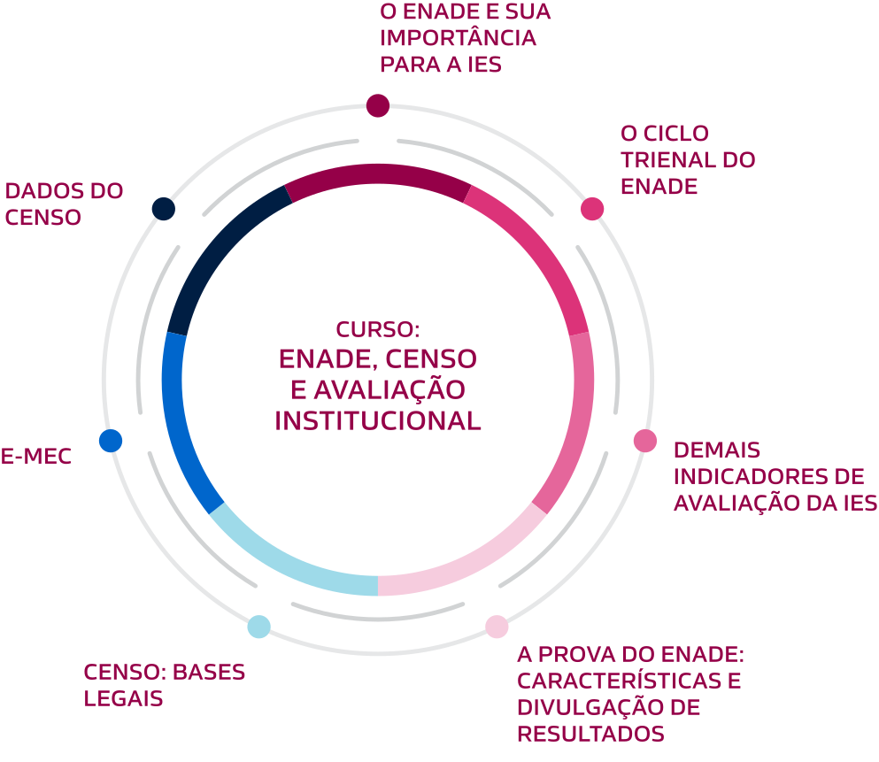
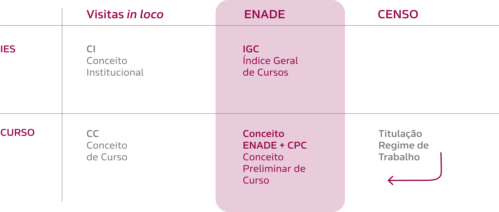
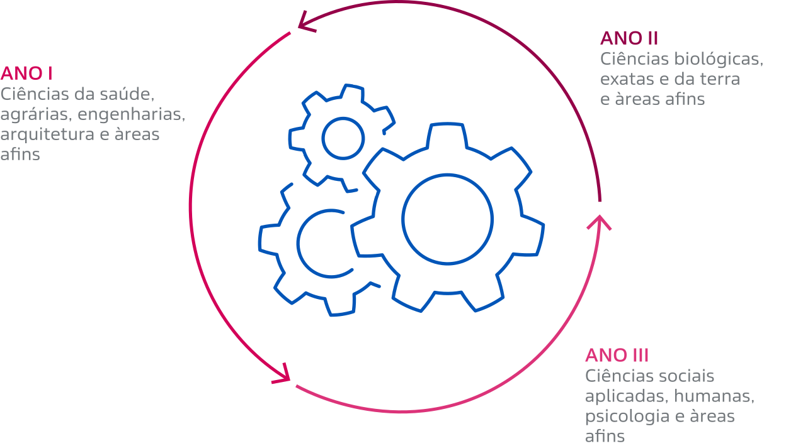
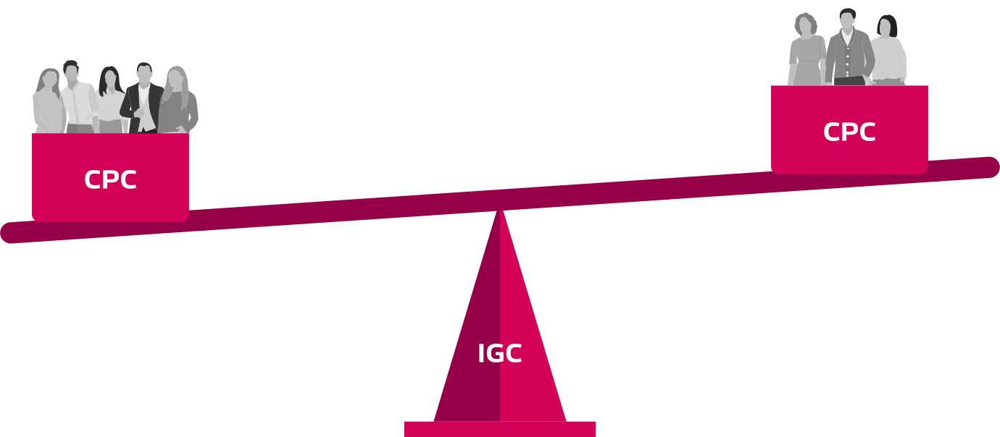
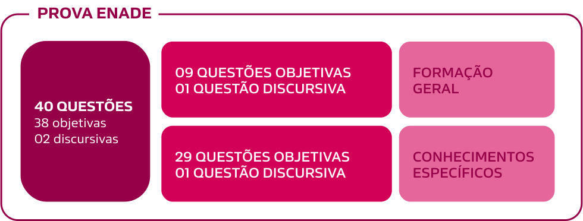

OBJETIVOS DE APRENDIZAGEM
Ao término deste curso, espera-se que você seja capaz de:
- reconhecer a importância do Enade para a IES;
- identificar a divisão das áreas e cursos do Ciclo Trienal do Enade;
- integrar os indicadores Enade à performance e à imagem da IES;
- relacionar os dados do Censo Educação Superior aos conceitos derivados do Enade.
Estrutura do Curso
Para atingir aos objetivos propostos, o curso está estruturado da seguinte forma:
Figura 1 - Estrutura do curso.
Introdução
Para Refletir
Agora que você já se ambientou ao curso, elencamos três perguntas de reflexão. Clique nas setas para visualizá-las:
- Você sabe qual a importância do Enade para a IES?
- Conhece os principais indicadores que o Enade pode gerar?
- Sabia que o Enade avalia a qualidade dos nossos cursos?
No decorrer deste curso, vamos responder a essas questões.
Siglas
Antes de seguir, é fundamental conhecer algumas siglas que serão vistas ao longo do curso.
Figura 2 - Descritivo das siglas.
O Enade e sua importância para a IES
Ele compõe o Sinaes na geração de indicadores preliminares para a avaliação de curso e IES. Então, vamos conhecer um pouco sobre o Sinaes!
O SINAES
No quadro, você poderá entender melhor como esses conceitos são gerados.
Quadro 1 - Como são gerados os conceitos.
Quais os objetivos do Enade?
Vamos conhecer os principais objetivos do Enade e seu papel na avaliação da educação superior brasileira.
Avaliar o desempenho dos estudantes com relação aos conteúdos programáticos previstos nas DCNs de Graduação.
Avaliar o desenvolvimento de competências e habilidades necessárias ao aprofundamento da formação geral e profissional.
Avaliar o nível de atualização dos alunos quanto à realidade brasileira e mundial.
O Exame Nacional de Cursos, conhecido como Provão, aplicado de 1996 a 2003, avaliava três áreas do conhecimento (Administração, Direito e Engenharia Civil). Em 2003, o Provão já avaliava 30 cursos da área de conhecimento.
O ciclo trienal do Enade
Previsão do ciclo trienal
O ciclo prevê que cada curso será avaliado ao menos uma vez a cada três anos. Em cada ano, há um grupo de cursos avaliados, como representado na imagem a seguir:
Figura 3 - Ciclo trienal de cursos avaliados.
Além do ciclo trienal, é importante que a instituição acompanhe a publicação dos seguintes documentos oficiais do MEC/Inep:
Portaria anual;
Edital anual;
Notas técnicas.
Indicadores de avaliação da IES
Processos avaliativos internos das IES
A partir da publicação dos conceitos obtidos no exame, as instituições serão impactadas em seus processos avaliativos internos e externos e em seus procedimentos gerenciais.
O Enade é alvo de controvérsia no que se refere ao seu papel como instrumento de avaliação da qualidade do Ensino Superior e para o Sinaes. Uma das questões que é frequentemente alvo de análises e críticas está relacionada ao fato de que, na verdade, são gerados quatro conceitos diferentes dessa avaliação, sendo que três deles têm algum efeito também para a regulação.
Cálculo de conceitos
Para o cálculo dos conceitos, os resultados do Enade são tratados estatisticamente, sendo inseridas variáveis extraídas:
- do desempenho dos estudantes no Enem;
- do Censo da Educação Superior (CENSup);
- das respostas ao Questionário do Estudante;
- do desempenho nas provas de Formação Geral e Conhecimentos Específicos que compõem a prova do Enade.
Indicadores de qualidade da educação superior
Essas variáveis constituem os principais elementos para o cálculo de importantes indicadores de qualidade da Educação Superior.
Verifica-se que a crença, muito difundida, de que a nota obtida no Enade reflete, exclusivamente, o desempenho que os alunos atingiram na avaliação composta de conhecimentos gerais e específicos é bastante equivocada.
Os indicadores de qualidade mantêm relação direta com o ciclo avaliativo do Enade.
A avaliação do MEC é feita por meio de três indicadores de desempenho, os quais avaliam os alunos, os cursos e as próprias instituições.
Indicadores de desempenho
Como já vimos, são indicadores de desempenho:
- Conceito Enade: avalia o desempenho dos estudantes.
- CPC: avalia a qualidade dos cursos.
- IGC: avalia a qualidade institucional.
Conceito Enade
O Conceito Enade avalia os cursos de graduação a partir dos resultados obtidos pelos estudantes no Exame Nacional de Desempenho dos Estudantes (Enade). O indicador é divulgado, anualmente, para os cursos em que pelo menos dois estudantes concluintes participaram do exame.
O único componente do Enade que não é utilizado como insumo para fins de avaliação é o Questionário do Coordenador, que é respondido em período posterior à aplicação do Enade.
Conceito Preliminar de Curso (CPC)
Este conceito é um indicador de qualidade que avalia os cursos de Graduação. Varia em uma escala de 1 a 5, e, para seu cálculo, é considerado o Conceito Enade. A divulgação é feita no ano seguinte à realização do Enade, e os cursos que não apresentarem, pelo menos, dois estudantes concluintes que tenham participado do Enade não terão seu CPC calculado, ficando Sem Conceito (SC), contudo, o CPC irá computar no cálculo do IGC.
Mesmo Sem Conceito (SC) no CPC, considera-se esse indicador para o cálculo do IGC.
A figura a seguir demonstra a composição do CPC e os pesos de cada uma das suas variáveis:
Figura 4 - Composição do CPC e os pesos das suas variáveis.
![Descrição de imagem: na composição do CPC, o enade tem 70%, a nota é composta por uma prova, aonde a nota concluinte é 20% e a nota IDD 35%, no questionário a nota da organização didático pedagógica é 7,5%, a nota de infraestrutura é 5% e a nota de oportunidade de ampliação é 2,5%. Na composição temos as notas do censo que é de 30%, ela é composta por nota de professores doutores 15%, nota de professores mestres 7,5% e nota de professores de TI e TP 7,5%. A soma desses percentuais compõe a nota do CPC do curso ou município.](images/fig-04a.svg)
Veja quando um conceito é considerado satisfatório ou insatisfatório:
Conceito satisfatório de CPC (> que 3) poderá dispensar a visita in loco nos processos de renovação de reconhecimento.
O conceito insatisfatório (< que 3) levará às seguintes consequências imediatas:
- curso sujeito obrigatoriamente a processo de renovação de reconhecimento;
- influência sobre o IGC da IES, já que este é a média dos CPCs dos seus cursos, ponderada pelo número de alunos;
- suspensão do Fundo de Financiamento Estudantil (FIES);
- possibilidade de suspensão do Programa Universidade para Todos (ProUni).

O Indicador de Diferença entre os Desempenhos Observado e Esperado (IDD) também é um conceito obtido pelo Enade, porém seu impacto regulatório é indireto, visto que é um dos componentes do Conceito Preliminar de
Curso (CPC).
Indicador de Diferença entre os Desempenhos (IDD)
Também é considerado o corpo docente (informações do Censo da Educação Superior referente ao percentual de doutores, mestres e regime de trabalho) e o Questionário do Enade (que é a percepção dos estudantes sobre seu processo formativo e tem caráter obrigatório).
Índice Geral de Cursos (IGC)
É o indicador responsável por determinar a qualidade da IES, calculado anualmente. É considerado o mais completo dos três indicadores e, por isso, é informalmente conhecido como a Nota do MEC para a instituição.
O conceito insatisfatório no IGC tem como uma de suas consequências o impacto negativo na imagem da IES junto à sociedade.
O Índice Geral de Cursos (IGC) utiliza, para seu cálculo, as seguintes informações:
- CPCs referentes aos cursos de Graduação avaliados no triênio anterior;
- número de matrículas nos cursos de Graduação (estudantes cursando ou formandos no ano de referência do CPC);
- número de matrículas nos cursos de Mestrado e Doutorado, conforme base de dados encaminhada pela Capes ao Inep;
- conceitos dos cursos de Mestrado e Doutorado atribuídos pela Coordenação de Aperfeiçoamento de Pessoal de Nível Superior (Capes) na avaliação, com resultados obtidos em 31 de dezembro do ano anterior.
O cálculo do IGC é obtido por meio da média dos CPCs de todos os cursos da IES, ponderada pelo número total de alunos em cada um desses cursos. Ou seja, quanto maior o número de alunos em um curso, maior o peso do CPC do curso no IGC da IES.
Para melhor visualização, observe a figura:
Figura 5 - Cáculo do IGC.
Assim, a partir do entendimento do cálculo do IGC, observamos o seguinte:
O IGC é calculado anualmente, considerando sempre o resultado do CPC dos três últimos anos.
As IES que não possuem cursos em diferentes áreas permanecem, algumas vezes, com o mesmo IGC por mais de um ano.
O IGC é calculado sobre os cursos que realizaram Enade, independentemente do número de cursos da IES.
Os CPCs de cursos com maior número de alunos influenciam mais o IGC da IES, pois a média é ponderada.
O resultado do stricto sensu será considerado quando a IES mantiver programa de Pós-graduação stricto sensu.
O conceito do IGC também é distribuído por faixas.
Um IGC insatisfatório (1 ou 2) também pode acarretar sanção para a IES.
A prova do Enade: características e divulgação de resultados
Vamos conhecer um pouco mais sobre as características do exame. São características da prova do Enade:
Figura 6 - Características da prova do Enade.
Afinal, tenho como saber o que vai ser abordado no Exame?
A prova do Enade é elaborada a partir das Diretrizes Curriculares Nacionais (DCNs) de cada um dos cursos.
É papel do coordenador de curso e do NDE analisar todos os documentos referentes ao Enade, Portaria anual, as DCNs e o Edital, de maneira a permitir o acompanhamento do cronograma proposto pelo Inep, bem como realizar as atividades de sua responsabilidade e prestar informações aos discentes sobre as ações de responsabilidade dos estudantes.
Após a aplicação do Exame, além dos resultados, são publicados os Relatórios:
De área;
Do curso;
Da IES.
Os relatórios são publicados no link a seguir, procure pelos resultados da sua IES e ou Curso clicando no botão.
O Enade e suas polêmicas
O Enade é um tema cercado de polêmicas. Portanto, o MEC incentiva que estudantes e a comunidade acadêmica informem possíveis desvios em sua aplicação, mantendo um canal direto para dúvidas e denúncias.
Figura 7 - Site do canal de dúvidas e denúncias do MEC.

É uma grande responsabilidade realizar as inscrições corretamente e, ainda, prestar as informações adequadas e exatas aos estudantes sobre a realização do Exame. As inscrições são de responsabilidade do coordenador de curso e realizadas por meio de seu acesso pessoal ao sistema oficial do Enade.
O Enade tem grande repercussão na mídia por vários motivos, sendo alguns deles:
- possui um calendário mais ou menos fixo, ou seja, os resultados do ano anterior são divulgados, geralmente, no mês de outubro, e um novo Exame é aplicado no mês de novembro. Essa regularidade permite que os veículos de comunicação reservem espaço e se planejem para essa pauta;
- diferentemente das outras avaliações externas in loco realizadas pelo Inep, os dados do Enade de todas as instituições são divulgados em conjunto, normalmente acompanhados de sinopses estatísticas e documentos de análise, produzidos pela equipe técnica do Inep/Ministério da Educação, o que permite análises comparativas do setor e geração de ranking de melhores e piores.
A divulgação dos dados do Enade impacta diretamente a imagem das instituições. Há, também, as consequências regulatórias, que precisarão de tempo para serem remediadas.
Os conceitos obtidos no Enade devem, porém, ser confirmados com as visitas in loco, que são realizadas, para os cursos com conceitos satisfatórios (> ou = a 3), após dois ciclos e, para os cursos com conceitos insatisfatórios (1 ou 2), após a divulgação dos resultados, com a abertura de processo de ofício para a renovação do ato autorizativo.
Censo
Bases legais
O CENSup é um instrumento independente, possuindo, inclusive, um site e sistema de coleta próprio, que carrega grande potencial informativo e que pode fornecer importantes fontes de reflexão para a comunidade acadêmica, o Estado e a população.
Além dos dados fornecidos de forma transparente a toda a sociedade – o que favorece todos os tipos de estudos acadêmicos e de mercado acerca do setor de Educação Superior –, essas informações serão consideradas como insumo para o cálculo de um dos conceitos derivados do Exame Nacional de Desempenho dos Estudantes – o Enade.
Faça sua pesquisa sobre os dados do Censo da Educação Superior clicando no botão a seguir.
Atividades
Pergunta 1
O Exame Nacional de Desempenho dos Estudantes (Enade) avalia o rendimento dos concluintes dos cursos de graduação em relação aos conteúdos programáticos previstos nas diretrizes curriculares dos cursos, o desenvolvimento de competências e habilidades necessárias ao aprofundamento da formação geral e profissional, e o nível de atualização dos estudantes com relação à realidade brasileira e mundial.
Aplicado pelo Inep desde 2004, o Enade integra o Sistema Nacional de Avaliação da Educação Superior (Sinaes), composto também pela Avaliação de cursos de graduação e pela Avaliação institucional.
INEP. Instituto Nacional de Estudos e Pesquisas Educacionais Anísio Teixeira. Disponível em: https://www.gov.br/inep/pt-br/areas-de-atuacao/avaliacao-e-exames-educacionais/enade. Acesso em: 18 set. 2023.
Sobre o Exame Nacional de Desempenho de Estudantes (ENADE) podemos afirmar que
- tem como um de seus objetivos avaliar o desempenho dos estudantes com relação aos conteúdos profissionalizantes dos cursos de Graduação em relação aos conhecimentos mais recentes nas diversas áreas do conhecimento.
- tem um ciclo trienal, ou seja, há realização do Exame de 3 em 3 anos para todas as áreas do conhecimento. Nos anos em que não ocorre o Enade, as instituições de ensino passam pela avaliação de cursos e a avaliação institucional.
- foi antecedido pelo Exame Nacional de Cursos, conhecido como Provão, que foi aplicado até 2003. A principal diferença entre o Provão e o Enade atual é a utilização da nota do Enem para fins de cálculo do IDD.
- possui calendário anual com a divulgação dos resultados de todas as IES, esse é um dos motivos que fazem com que o Exame seja muito conhecido do público em geral e a avaliação que é mais mencionada pelos meios de comunicação.
- tem seus conceitos e indicadores obtidos exclusivamente a partir do desempenho dos estudantes na prova que é aplicada para os cursos de graduação, anualmente, no mês de novembro.
Gabarito: a opção correta é a letra D.
Pergunta 2
O CPC (Conceito Preliminar de Curso) é um indicador decorrente da realização do Exame Nacional de Desempenho de Estudantes – o ENADE, composta com outros insumos que foram previstos no Sistema Nacional de Avaliação do Ensino Superior (SINAES). Os resultados do Enade, aliados às respostas do Questionário do Estudante, são insumos para o cálculo dos Indicadores de Qualidade da Educação Superior.
INEP. Instituto Nacional de Estudos e Pesquisas Educacionais Anísio Teixeira. Disponível em: https://www.gov.br/inep/pt-br/areas-de-atuacao/avaliacao-e-exames-educacionais/enade. Acesso em: 18 set. 2023 (adaptado).
Com base no trecho acima e no que foi apresentado no material instrucional desta capacitação, o cálculo do CPC é obtido através do desempenho obtido pelos estudantes no ENADE acrescido.
- da titulação dos professores e questionário do estudante.
- do regime de trabalho dos professores e questionário do estudante.
- do IDD, insumos do CENSup e questionário do estudante.
- dos insumos do CENSup e questionário do estudante.
- do IDD, insumos do CENSup, questionário do estudante e do coordenador de curso.
Gabarito: a opção correta é a letra C.
Pergunta 3
Texto
Observe abaixo a manchete publicada no Portal G1, na coluna de Educação.
“Mais de 600 cursos no Brasil avaliados em 2021 têm qualidade insatisfatória, diz MEC. Fatia é equivalente a 8% do total de graduações analisadas. No outro extremo, 221 cursos (5,2%) tiraram a nota máxima na avaliação do Ministério da Educação”.
Disponível em: https://g1.globo.com/educacao/noticia/2023/03/28/mec-divulga-avaliacoes-de-cursos-de-licenciatura.ghtml. Acesso em: 18 set. 2023.
A partir da análise da manchete apresentada, avalie as assertivas que seguem.
I. A cobertura jornalística representada, pela manchete de um conhecido veículo de imprensa, demonstra o conhecimento superficial dos cálculos dos indicadores, por parte dos meios de comunicação, já que a metodologia pressupõe uma distribuição Gaussiana dos cursos nas faixas de 1 a 5.
II. O CPC (conceito preliminar de curso) é um dos indicadores de qualidade dos cursos de graduação brasileiros, calculado a partir da realização do Enade leva em consideração também outros insumos. Seu principal objetivo é servir como indutor da melhoria do Ensino pelas instituições e pelos órgãos responsáveis pela criação de políticas públicas na área da Educação.
III. A faixa (representada por uma escala de 1 a 5) em que um determinado curso se encontra não significa, necessariamente, falta de qualidade. Uma série de fatores influenciam o cálculo do indicador e, portanto, a divulgação dos resultados deveria sempre vir acompanhada dos esclarecimentos de especialistas.
IV. A divulgação dos indicadores de qualidade que são gerados a partir do Enade têm grande impacto na reputação das instituições, porém, seus efeitos regulatórios são inexpressivos, dado que os mais importantes são as visitas in loco de reconhecimento e renovação de reconhecimento dos cursos de graduação e de recredenciamento institucional.
É correto apenas o que se afirma em:
- I, II e III.
- I, II e IV.
- II e III.
- II e IV.
- II, III e IV.
Gabarito: a opção correta é a letra E.
Pergunta 4
Censo da Educação Superior
O Censo da Educação Superior, realizado anualmente pelo Inep, é o instrumento de pesquisa mais completo do Brasil sobre as instituições de educação superior que ofertam cursos de graduação, bem como sobre seus alunos e docentes.
O Censo da Educação Superior utiliza as informações do cadastro do sistema e-MEC, em que são mantidos os registros de todas as instituições, seus cursos e locais de oferta. A partir desses registros o censo coleta informações sobre a infraestrutura das instituições de educação superior, vagas oferecidas, candidatos, matrículas, ingressantes, concluintes e docentes, nas diferentes formas de organização acadêmica e categorias administrativas.
O objetivo da coleta de dados é oferecer informações estatísticas confiáveis, que permitam conhecer e acompanhar o sistema brasileiro de educação superior, subsidiar o Ministério da Educação com informações estatísticas para as atividades de acompanhamento e avaliação, programas de expansão e de melhoria da qualidade desse nível de ensino, entre outros; disponibilizar dados par ao cálculo de indicadores que fundamentem a formulação e a implementação de políticas públicas e contribuir para o trabalho dos gestores das instituições e demais gestores de governo, de instituições de âmbito público ou privado, pesquisadores, especialistas e estudantes do Brasil e de outros países, bem como de organismos internacionais.
Disponível em: https://www.gov.br/inep/pt-br/areas-de-atuacao/pesquisas-estatisticas-e-indicadores/censo-da-educacao-superior. Acesso em: 18 set. 2023.
A partir da apresentação contida no site do INEP sobre o Censo da Educação Superior (CENSup), e dos conhecimentos que você adquiriu na capacitação, é correto afirmar que:
- O Censo da Educação Superior é a coleta de informações das IES e cursos, realizada bianualmente, para a publicação de estatísticas sobre o setor de Educação Superior.
- Os dados coletados pelo CENSup possuem impacto regulatório sendo utilizado como insumos para outras avaliações e monitoramento das instituições, incluindo para o cálculo de indicadores de qualidade, incluindo o conceito do ENADE.
- Os dados fornecidos pelas IES ao Censo da Educação Superior são sigilosos e, por este motivo, não podem ser disponibilizados para a sociedade.
- As informações do Censo da Educação Superior são coletadas por meio eletrônico através do sistema e-MEC.
- Não é possível realizar estudos aprofundados sobre a Educação Superior no país baseados nos dados coletados pelo CENSup pois este é, ainda, muito recente.
Gabarito: a opção correta é a letra B.
Pergunta 5
Observe a fórmula de cálculo do IGC (Índice Geral de Cursos), a partir do CPC (Conceito Preliminar de Curso) dos cursos de uma Instituição de Ensino Superior (IES), reproduzida a seguir.
IGCIES = α.GIES + β.MIES + γ.DIES
Onde:
IGCIES é o Índice Geral de Cursos Avaliados da IES;
α é a proporção de matrículas na graduação;
GIES é a nota média da graduação da IES;
β é a proporção relativa às matriculas nos cursos de Mestrado da IES;
MIES é a nota média de Mestrado da IES;
γ é a proporção relativa às matrículas nos cursos de doutorado da IES; e
DIES é a nota média de Doutorado da IES.
Fonte: NOTA TÉCNICA Nº 59/2020/CGCQES/DAES (INEP, 2020).
Sobre o cálculo do IGC, analise as assertivas que seguem.
I. O IGC é calculado a cada três anos, considerando o resultado dos CPC dos cursos de uma instituição que realizaram o exame nos três últimos anos. Portanto, as IES terão um novo IGC calculado a cada triênio.
II. O IGC é um indicador de qualidade que é representado por faixas que vão de 1 a 5, sendo consideradas como insatisfatórias as faixas 1 e 2. As IES que não atingem IGC igual ou maior que 3 estão sujeitas a sansões regulatórias.
III. Por se tratar de uma avaliação dos cursos superiores de graduação, as notas dos Programas de Pós-graduação stricto sensu, que são avaliados pela Capes, não são relevantes para o cálculo do IGC.
IV. O IGC é calculado considerando todos os cursos que realizaram ENADE, e que tiveram CPC atribuído no último ciclo avaliativo, independentemente do número de cursos da IES.
V. Os CPC de cursos com maior número de alunos influenciam mais o IGC da IES, ou seja, tem maior peso, pois o cálculo do IGC é obtido por meio de uma média ponderada, considerando justamente o quantitativo de estudantes dos cursos.
É correto apenas o que se afirma em:
- I, II e III.
- I, II e IV.
- I, II, IV e V.
- III, IV e V.
- II, IV e V.
Gabarito: a opção correta é a letra E.

Todos os direitos reservados. Copyright © 2023 Afya Educacional.